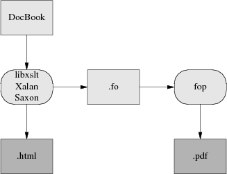

The easiest way to format and render XML-DocBook documents is to use the xmlto toolchain. This ships with Red Hat; Debian users can get it with the command apt-get install xmlto.
Normally, what you'll do to make XHTML from your DocBook sources will look like this:
bash$ xmlto xhtml foo.xml bash$ ls *.html ar01s02.html ar01s03.html ar01s04.html index.html |
In this example, you converted an XML-Docbook document named foo.xml with three top-level sections into an index page and two parts. Making one big page is just as easy:
bash$ xmlto xhtml-nochunks foo.xml bash$ ls *.html foo.html |
Finally, here is how you make PDF for printing:
bash$ dblatex foo.xml # To make PDF bash$ ls *.pdf foo.pdf |
Some older versions of xmlto may be more verbose, emitting noise like "Converting to XHTML" and so forth.
To turn your documents into HTML or PDF, you need an engine that can apply the combination of DocBook DTD and a suitable stylesheet to your document. Here is how the open-source tools for doing this fit together:
Present-day XML-DocBook toolchain
Parsing your document and applying the stylesheet transformation will be handled by one of three programs. The most likely one is xsltproc. The other possibilities are two Java programs, Saxon and Xalan,
It is relatively easy to generate high-quality XHTML from DocBook; the fact that XHTML is simply another XML DTD helps a lot. Translation to HTML is done by applying a rather simple stylesheet, and that's the end of the story. RTF is also simple to generate in this way, and from XHTML or RTF it's easy to generate a flat ASCII text approximation in a pinch.
The awkward case is print. Generating high-quality printed output (which means, in practice, Adobe's PDF or Portable Document Format, a packaged form of PostScript) is difficult. Doing it right requires algorithmically duplicating the delicate judgments of a human typesetter moving from content to presentation level.
So, first, a stylesheet translates Docbook's structural markup into another dialect of XML — FO (Formatting Objects). FO markup is very much presentation-level; you can think of it as a sort of XML functional equivalent of troff. It has to be translated to Postscript for packaging in a PDF.
In the toolchain shipped with most present-day Linux distributions, this job is best handled by a program called dblatex (this obsoletes the older passivetex package that previous versions of tis HOWTO described).
dblatex translates the formatting objects generated by xsltproc into Donald Knuth's TeX language. TeX was one of the earliest open-source projects, an old but powerful presentation-level formatting language much beloved of mathematicians (to whom it provides particulaly elaborate facilities for describing mathematical notation). TeX is also famously good at basic typesetting tasks like kerning, line filling, and hyphenating. TeX's output is then massaged into PDF.
If you think this bucket chain of XML to Tex macros to PDF sounds like an awkward kludge, you're right. It clanks, it wheezes, and it has ugly warts. Fonts are a significant problem, since XML and TeX and PDF have very different models of how fonts work; also, handling internationalization and localization is a nightmare. About the only thing this code path has going for it is that it works.
The elegant way will be FOP, a direct FO-to-Postscript translator being developed by the Apache project. With FOP, the internationalization problem is, if not solved, at least well confined; XML tools handle Unicode all the way through to FOP. Glyph to font mapping is also strictly FOP's problem. The only trouble with this approach is that it entirely doesn't work yet. As of October 2010 FOP is at 1.0 and usable, but with rough edges and missing features. I recommed dblatex for production use.
Here is what the FOP toolchain looks like:

Future XML-DocBook toolchain with FOP.